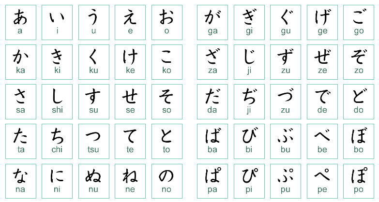
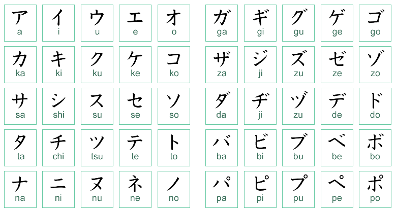
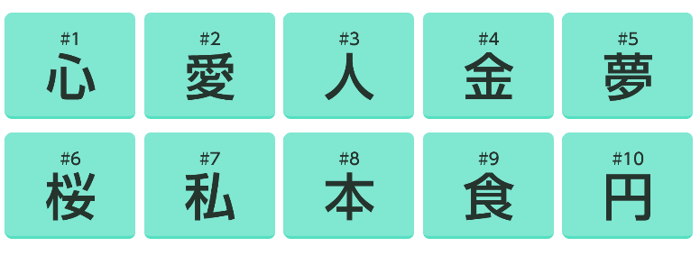
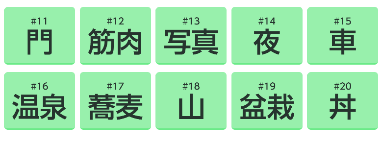
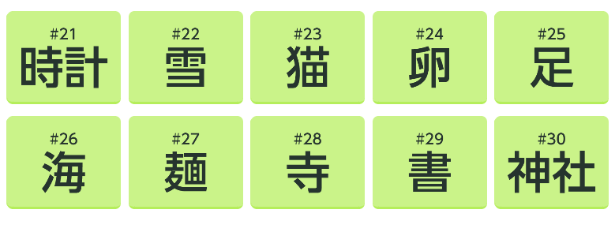
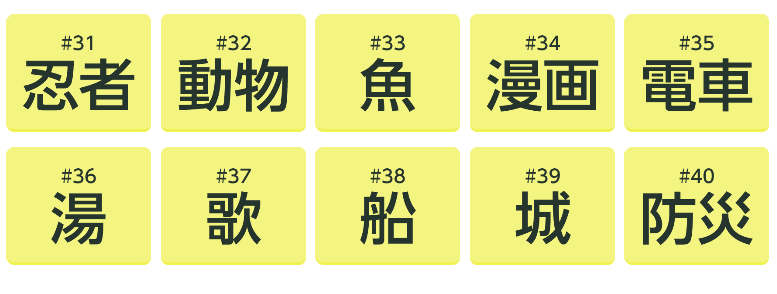
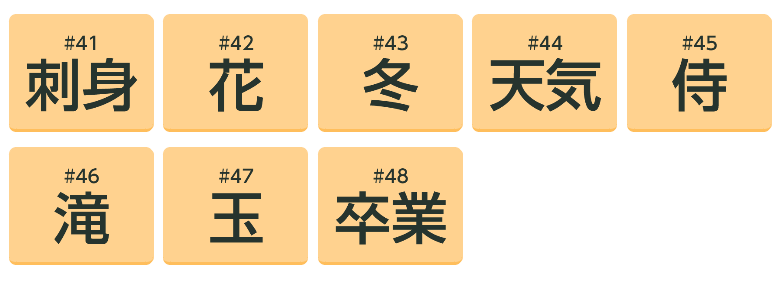

En japonais, il existe trois types de caractères : les hiragana, les katakana et les kanji. Les hiragana et les katakana sont des symboles phonétiques. Chacun représente une syllabe. Les kanji sont des idéogrammes qui ont chacun leur sens propre.
definition:Signe syllabique japonais (kana) utilisé surtout pour noter les éléments grammaticaux non transcrits par les kanjis.

definition: L'un des deux syllabaires japonais dont les signes (kana) sont de forme angulaire.

definition: Caractère chinois de l'écriture japonaise.




